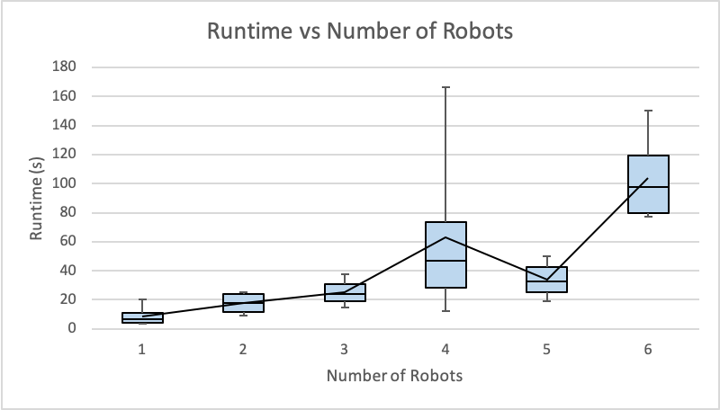
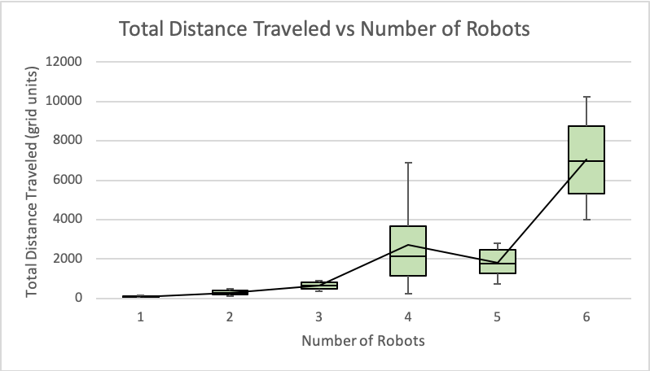

Number of agents
The first experiment we ran was to understand how the size of the swarm affects the performance of the algorithm. We used two metrics to judge the performance: total distance traveled by the robots \(TDT\) and time taken to converge. We were confident that time taken and \(TDT\) would increase as the number of agents increased since more agents would lead to more path-planning, goal assignment and overall computation. However, we noticed an interesting result in [1] where the algorithm’s performance suddenly improves (i.e. the total time and \(TDT\) decreases) as the number of agents is increased. Specifically, the performance of the algorithm for 196 agents is far better than the performance for 25 to 169 and 225 to 529 agents.
We performed the same experiment with our implementation, averaging results over 6 trials per swarm size. The results are shown in Figure 1. As expected, we see an overall increase in the runtime and distance travelled as the number of robots increases. We also see the previously mentioned improvement when using five agents. On visualizing these trials on our simulator we noticed some behaviors that might be causing this anomaly. When the number of agents is too high, the number of agents sharing the same goal is larger, causing a large number of ’wait-flags’, leading to increased runtime. There is also excess travel when the robots try to swap goals and form clusters of cyclic ’traffic graphs’. When the number of agents is too small, the performance is good but two or three robots can hardly be called a swarm. There is a strange behavior when there are four agents which occurs due to cluster formation and repeated swapping of goals.
 